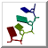

Nucleotides 
Nucleotides creates special nucleotide-specific displays,
including VRML representations of the base and sugar moieties.
Such displays are generally combined with various
atomic representations
and/or ribbons.
Nucleotides representations are included in saved
sessions.
See also:
Nucleic acid visualization with UCSF Chimera.
Couch GS, Hendrix DK, Ferrin TE.
Nucleic Acids Res. 2006 Feb 14;34(4):e29.
There are several ways to start
Nucleotides, a tool in the Depiction category.
It is also implemented as the command
nucleotides.
Options:
- Show backbone as:
- atoms & bonds - include all currently displayed nucleic acid
backbone atoms
- ribbon (default) - use the nucleic acid rotated
residue class
- classic ribbon - uses the nucleic acid
residue class
- Show sidechain (sugar / base) as:
- atoms & bonds
- include all currently displayed nucleic acid sidechain atoms
- fill / fill
- show the sugar (ribose) and base moieties as filled rings
- fill / slab (default) - fill in sugar rings, show bases as slabs
(see Slab Options
and Slab Style)
- tube / slab - show sugars as tubes connecting the bases to
the backbone, show bases as slabs
(see Slab Options
and Slab Style)
- ladder - show H-bonded residue pairs as rods or ladder rungs
(see Ladder Options)
By default, ring fill thickness will track the thickness of the
surrounding bonds: only a thin layer for a ring in the wire
representation,
but thick when surrounded by stick bonds
(like what is obtained with
fillring thick).
- Show base orientation (true/false)
- show the positive faces of bases with bumps.
The positive faces are those which point towards the 3' end of a
strand in right-handed A- and B-DNA (the positive Z direction
in the standard reference frame).
The bumps will be displayed for bases shown as slabs or
with thick fill, but not where the fill is thin.
Clicking NDB Colors sets atom and ribbon colors
according to the convention used in the
Nucleic Acid Database (NDB) Atlas:
A red, T blue, C yellow, G green, and U cyan.
Special nucleotide representations will be created only where the corresponding
atoms are displayed, and will be colored to match the atoms.
OK updates the display and dismisses the dialog;
Apply updates the display without dismissing the dialog.
The option Restrict OK/Apply... limits any changes
(including setting NDB Colors) to nucleotide residues in the current
selection.
Close dismisses the dialog, and
Help opens this manual page in a browser window.
Nucleotide displays other than atoms, bonds, and ribbons
are opened as a VRML model with the same model number as
the corresponding molecule model.
These models can be closed or hidden with the
Model Panel,
or undisplayed/displayed (hidden/shown) with the command
objdisplay.
Slab Options
- Thickness (default 0.5 Å) - slab thickness;
the other dimensions depend on the slab style
- Slab object - slab shape
- box (default)
- rectangular in the plane of the base with rectangular cross-section
- tube
- rectangular in the plane of the base with elliptical cross-section
- ellipsoid
- elliptical in the plane of the base with elliptical cross-section
- Hide base atoms (true/false)
- whether to hide the atoms and bonds in bases when slabs are shown
- Separate glycosidic bond
(true/false)
- whether tube sugar representations should each
consist of a single straight segment (default)
or two segments, one along the glycosidic (sugar-base) bond;
applies only to tube / slab display
with base-anchored slab styles
(long, skinny).
Slab Style
A slab style refers to the slab dimensions and location
relative to the atoms in purine and pyrimidine bases.
The settings define a virtual rectangle in the plane of the base,
as shown in the schematic diagrams in the dialog.
Ellipsoid slab objects
will be drawn to enclose the the virtual rectangle.
Changes in Slab Style settings will be shown in the schematics,
but will not affect the Chimera display until either
Apply or OK is clicked.
The built-in slab styles are big, fat, long (default),
and skinny. Slab styles can be named, saved, and later retrieved
from the pulldown list indicated by the solid black triangle.
When the name of a built-in style is shown, it is only
possible to save to a different name, using Save As....
When another name is shown, it is possible to:
- Save the slab style to the name shown
- use Save As...
to save the slab style to a new name
- Delete
the slab style whose name is shown (if previously saved)
Custom slab styles are saved in the Chimera
preferences
file, and are only updated with any changes
when Save, Save As... or Delete is used.
The Anchor is the point of reference for the virtual rectangle:
- sugar - at the sugar end of the glycosidic bond (atom C1')
- base - at the base end of the glycosidic bond
Purine and Pyrimidine settings each include:
- Lower left - position of the rectangle's lower left corner (as
shown in the schematic) in Å from the anchor;
the first number is distance along the X-axis in the
standard reference frame
(positive means to the right) and the second is distance along the
Y-axis in the standard reference frame
(negative means downward)
- Upper right - position of the rectangle's upper right corner (as
shown in the schematic) in Å from the anchor;
the first number is distance along the X-axis in the
standard reference frame
(positive means to the right) and the second is distance along the the
Y-axis in the standard reference frame
(negative means downward)
The standard reference frame
is described in:
A standard reference frame for the description of nucleic acid
base-pair geometry.
Olson WK, Bansal M, Burley SK, Dickerson RE, Gerstein M, Harvey SC, Heinemann U, Lu XJ, Neidle S, Shakked Z, Sklenar H, Suzuki M, Tung CS, Westhof E, Wolberger C, Berman HM.
J Mol Biol. 2001 Oct 12;313(1):229-37.
Ladder Options
- Skip non-base H bonds (true/false)
- whether to consider only base atoms when identifying H-bonds;
otherwise, all nucleic acid atoms will be considered (default)
- Show stubs (true/false)
- whether to show bases without H-bonds to other bases as half-rungs
(default) or not at all
- Rung radius (default 0.45 Å)
- radius to use for ladder rungs showing H-bonds between bases, and
for stubs representing bases that lack H-bonds to other bases.
When the Skip... option is false, any H-bonds involving
non-base atoms (on either or both ends) will be shown
with a smaller radius corresponding to the smallest ribbon dimension,
or if the backbone is not shown as a ribbon, the model stick size.
- Use existing H-bonds (true/false)
- whether to use H-bonds previously calculated with
FindHBond
(or the command
findhbond)
instead of running a new calculation.
If this option is true and a
pseudobond group
named hydrogen bonds exists,
another H-bond calculation will not be performed
(even if the H-bonds are for some other structure).
- Relax H-bond constraints (on by default)
- whether to relax the strict
geometric criteria
for identifying H-bonds.
The default relaxation amounts are 0.4 Å and 20.0°.
Limitations
Some nonstandard residues not handled.
Residues handled are
A, DA, T, DT, C, DC, G, DG, U, PSU (pseudouridine base), and I (inosine base),
as well as certain modified versions:
- described in MODRES records
- in which the base ring atoms are unchanged
(for example, methylated or brominated derivatives)
After showing these modified bases as slabs,
it may be necessary to undisplay extra base atoms
that were not hidden automatically.
UCSF Computer Graphics Laboratory / August 2009